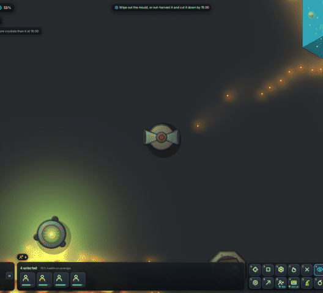
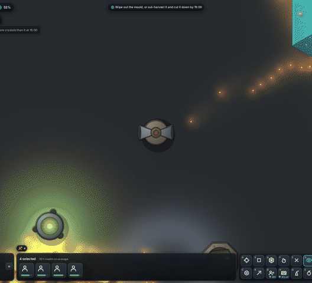
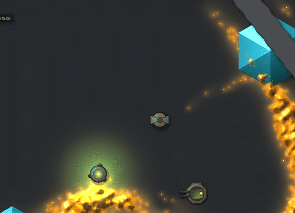
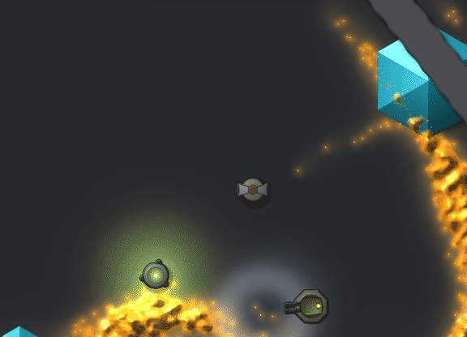

<title>Siren Alarm Field</title>
<meta name="claude:viewport-fit-sides" content="cover">
<link rel="stylesheet" href="https://fonts.googleapis.com/css2?family=Space+Grotesk:wght@500;700&family=Inter:wght@400;600&family=JetBrains+Mono:wght@400&display=swap">
<style>
/* Layout: one column of before/after pairs, the counts beside each pair. */
:root {
  --bg: #f3f1ea; --fg: #1d1c18; --muted: #5d5a50; --line: #d6d1c2; --panel: #e9e5d8; --accent: #6b7a3a;
  --display: "Space Grotesk", system-ui, sans-serif; --body: "Inter", system-ui, sans-serif; --mono: "JetBrains Mono", ui-monospace, monospace;
}
@media (prefers-color-scheme: dark) { :root:not([data-theme="light"]) { --bg: #16150f; --fg: #ece8da; --muted: #a8a390; --line: #34322a; --panel: #1f1e17; --accent: #a8b86c; color-scheme: dark } }
:root[data-theme="dark"] { --bg: #16150f; --fg: #ece8da; --muted: #a8a390; --line: #34322a; --panel: #1f1e17; --accent: #a8b86c; color-scheme: dark }
body { background: var(--bg); color: var(--fg); font: 15px/1.55 var(--body); }
main { max-width: 1100px; margin: 0 auto; padding-block: 28px 60px; padding-left: max(16px, env(safe-area-inset-left, 0px)); padding-right: max(16px, env(safe-area-inset-right, 0px)); display: grid; gap: 34px; }
h1, h2 { font-family: var(--display); text-wrap: balance; margin: 0; }
h1 { font-size: 30px; }
h2 { font-size: 20px; }
p { margin: 0; max-width: 70ch; }
.lede { color: var(--muted); }
section { display: grid; gap: 12px; border-top: 1px solid var(--line); padding-top: 20px; }
.pair { display: grid; grid-template-columns: 1fr 1fr; gap: 14px; }
@media (max-width: 760px) { .pair { grid-template-columns: 1fr; } }
figure { margin: 0; display: grid; gap: 6px; min-width: 0; }
figure img { width: 100%; border-radius: 4px; background: var(--panel); }
figcaption { font-size: 13px; color: var(--muted); }
.tag { font: 11px var(--mono); letter-spacing: .08em; text-transform: uppercase; color: var(--accent); }
ul { margin: 0; padding-left: 20px; max-width: 75ch; }
code { font: 13px var(--mono); }
</style>
<main>
  <header style="display:grid;gap:8px">
    <span class="tag">Larder World · buildings and bites · 2026-11-14</span>
    <h1>Buildings that show what they are doing</h1>
<main>
  <header style="display:grid;gap:8px">
    <span class="tag">Larder World · siren · 2026-11-14</span>
    <h1>A siren's call is the alarm field itself</h1>
    <p class="lede">This follows up the building looks (#271). There, the siren's call was two rings drawn out to its reach from the call's time, which is a drawn effect. Now the view reads the engine's alarm field (the germ fields' second block, bound to the view) and draws it as a pale haze, with a brighter front where the field falls off. So what you see is the field the burst lays, spreading and fading as the engine spreads and decays it. Fork map, seed 1, the same staged buildings as #271, the siren at (120, 178) calling every 4 s, headless on llvmpipe. Left is #271, right is this change; one call, at 0:08.0.</p>
  </header>

  <section>
    <h2>Zoom 12</h2>
    <p>0:07.9 to 0:09.4. The burst lays its alarm over a 15-cell disc, so the front appears at the disc's edge as the call lands. Each tick the engine averages each cell's 3×3 block and keeps 0.95 of it (<code>siren_keep</code>), so the front softens, widens and dims to nothing in about 1.5 s. The haze is pale cool white, not red, because red already means a bolting walker and the rim of a cut-off piece (the slime-look thread). The siren's lamp still flares red for 0.7 s, since that is the building's own state.</p>
    <div class="pair">
      <figure><figcaption>#271 · two drawn rings, timed from the call</figcaption></figure>
      <figure><figcaption>This change · the engine's alarm field, front and haze</figcaption></figure>
    </div>
  </section>

  <section>
    <h2>Zoom 6</h2>
    <p>0:07.8 to 0:10. Any other alarm in the field shows too, such as the smaller fronts by the mould below.</p>
    <div class="pair">
      <figure><figcaption>#271 · zoom 6</figcaption></figure>
      <figure><figcaption>This change · zoom 6</figcaption></figure>
    </div>
  </section>

  <section>
    <h2>How</h2>
    <ul>
      <li>View bindings 25 and 26 hold the engine's two germ fields, agreed with the slime-look thread. A uniform carries which side is current (<code>Engine::done</code> % 2) and the alarm that reads full (the siren's <code>siren_alarm</code>, 150). The look word is unchanged.</li>
      <li>Per world pixel: the haze is 0.10 × (1 − e<sup>−a/75</sup>) and the front is 0.45 × (1 − e<sup>−|∇a|/18</sup>), added in a pale cool white. Where the field is under 1% of full, nothing is drawn and its slope is not sampled.</li>
      <li>Cost on llvmpipe, paired <code>bench=30 hand=build</code>, #271 then this change: the first cut sampled the field five times everywhere and cost 86.7 → 95.3 ms GPU tail p50. With the 1% early-out it is 84.5 → 87.7 ms (+3.8%), one pair. The 1070 timing waits for the PC.</li>
      <li>Test: <code>the_alarm_field_shows_its_front_on_the_current_side</code>. A disc of alarm lifts its edge most and its middle less, and leaves far outside unchanged. The other side, or no alarm bound, shows nothing.</li>
    </ul>
  </section>
</main>
